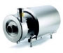
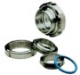
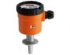
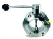

Bombas para Uso Sanitario 1
Las bombas centrífugas Alfa Laval son la mejor opción para mover producto a través de un sistema cuidadosa y eficientemente. Para aplicaiones especiales, Alfa Laval ofrece bombas multi-etapa, de alta presión y de alta pureza de agua. Además de tratamiento cuidadoso del producto, las bombas presentan un número de decisivos beneficios incluyendo liempieza en el lugar para óptima higiene y mínimo tiempo de espera, junto con un bajo costo de mantenimiento.
Bombas para Uso Sanitario 2

La bomba Alfa Laval de bulbo rotativo con montaje universal provee bombeo altamente eficiente sobre un amplio rango de viscosidades y es adecuada para operaciones de limpieza en el lugar. Esto significa que puede mantener operación óptima por períodos de tiempo más largos, y reducir su trabajo y costos de mantenimiento. Las Bombas Alfa Laval de bulbo rotativo son la solución para procesos ultra-limpios, por ejemplo en la industria biofarmacéutica. La serie de bombas de anillo líquido provee un número de opciones para bombear líquidos que contienen gases. Pueden bombear desde una línea parcialmente llena de aire, haciéndolas ideales como bombas de retorno en sistemas CIP.
Material para Instalaciones
Cada eslabón de la cadena cuenta La integridad del material, precisión y uniformidad en bombas y válvulas son poca garantía si los materiales de instalación no cumplen con los mismos estrictos estándares de calidad. Los equipamientos para tanques y para limpieza son esenciales en el mantenimiento de la calidad del proceso con respecto a la presión y pureza. El eslabón más pequeño en la cadena de producción puede ser también el cual es más de ignorar. Alfa Laval provee una línea completa de material de instalación para toda industria de procesos sanitarios desde el rango estándar para las industrias de bebidas y alimenticias, pasando por el HighClean para aplicaciones demandantes en estas y la industria de cuidado personal, hasta el rango Biofarmacéutico que satisface los exigentes requerimientos de las industrias farmacéuticas y biofarmacéuticas. Este abarcante rango significa que usted puede ahorra tiempo y problemas usando Alfa Laval como su único proveedor de todo tipo de material de instalación, incluyendo uniones, bridas, codos, reductores y tubos para todos los propósitos.
Medidor / Interruptor de Caudal KAL-K
Calorimétrico, Rango de Interrupción: 4 cm/s … 2 m/s, Conexión: Tri Clamp, DIN 32676, conexión especial, Material:, Latón, Acero inoxidable, Máxima Presión: 100 bar, Máxima Temperatura: 80°C, Reproductibilidad ca. 2 %, Cadena de LED, Reles, Salida Analógica, Precisión: 10% fondo de escala
Medidor de Caudal Modelo DMI

Magnético – Inductivo, Sin partes móviles, Rango de Medición:0-50 l/min…0-1200 l/min Agua, Conexión:G 3/4…G 2 ¾, Material: PTFE, PEEK, Max. Presión: 10 bar, Max.Temperatura: 80°C (PEEK), Precisión: %3 del valor medido, opcional: 1,5%, Salida: Impulsos / Salida analógica, Indicación digital, Contador
Medidor de Nivel Modelo LPC

Capacitivo, Por principio hidrostático, Membrana cerámica con frente lavable, Rango de Medición: 0 – 100 m de columna de agua, Conexión: G1 Para conexiones higiénicas LZE, Material: Acero inoxidable, cerámica óxido de Aluminio, Máxima, Temperatura: 100°C (opcional 150 °C), Salida: 4-20 mA, Accesorios: Indicador de Nivel Digital LPA, Precisión: < 0,1% escala complete
Sensor de Presión Modelo SEN-8600…DRM

Para máquinas homogenizadoras Con Indicador enchifable 4 dígitos Versión: Acero inoxidable Rango de Medición: 0 Hasta 400 bar … 0 Hasta 600 bar Membrana frontal Clase de Precisión: 1,0 Temperatura Máxima: 100°C Conexión: conexión rápida
Válvulas para Uso Sanitario 1
Las válvulas Mixproof son una parte esencial del procesamiento de flujos sanitarios, separando dos productos diferentes, pero también preveniendo la contaminación desde otros fluídos no sanitarios. Mixproof significa no-mezcla de líquidos incompatibles, pero cuando se piensa en términos de procesamiento, la tarea es obtener soluciones compatibles mientras al mismo tiempo se usan tan pocos recursos como sea posible. En efecto, una válvula de doble asiento puede hacer el trabajo de dos o tres válvulas de simple asiento, ahorrándole espacio y costos de instalación, y dándole una flexibilidad de sistema inigualable. Alfa Laval ofrece muchas vávulas mixproof, todas con mantenimiento simple y de bajo costo.
Válvulas para Uso Sanitario 2

Válvulas Asépticas de Diafragma Alfa Laval ofrece un extenso rango válvulas asépticas de diafragma para procesos ultra-higiénicos. La válvulas de diafragma es la más comunmente usada en la industria farmacéutica, pero también es una alternativa ideal para otras aplicaciones asépticas. Con su diseño modular, compuesto de cuerpo, diafragma y actuador, posibilita la realización de diseños especiales con componentes estándar de alta calidad y bien probados. Puede ser combinada en gran número de configuraciones pero la más típica es una válvula de dos vías con función de on/off. La Válvula Aséptica de Diafragma está disponible tanto con actuadores manuales y neumáticos.
Válvulas para Uso Sanitario 3
Las válvulas mariposa Alfa Laval son económicas, disponibles tanto para sistemas automáticos u operados manualmente. Gracias a sus amplias áreas de apertura, estas válvulas de acero inoxidable ofrecen baja resistencia al flujo, permiten dirección de flujo reversible y proveen trato amable de productos de baja y media viscosidad.